Diagram b-ACO Sollin/Borůvka untuk d-MST
Halaman ini menampilkan gambar aco-sollin secara penuh, dengan langkah algoritma ringkas.
#appsMeteheuristic.

Jika gambar tidak muncul, pastikan file aco-sollin berada di folder yang sama dengan HTML ini.
Langkah-langkah b-ACO Sollin/Borůvka untuk d-MST
- Mulai.
- Input: graf berbobot, jumlah simpul n, batas derajat d, parameter ACO
α, β, ρ, Q,
jumlah semut, dan iterasi maksimum.
- Inisialisasi feromon: set nilai awal feromon pada semua edge, misalnya τ₀.
- Untuk setiap iterasi dari t = 1 sampai MaxIter:
- Set solusi terbaik iterasi = kosong.
- Untuk setiap semut:
- Inisialisasi komponen: setiap simpul dianggap 1 komponen, solusi edge E = ∅, derajat setiap simpul = 0.
- Ulangi selama jumlah komponen > 1:
- Untuk setiap komponen, buat daftar kandidat edge yang keluar dari komponen menuju komponen lain.
- Pilih satu edge menggunakan probabilitas ACO berdasarkan feromon dan heuristik biaya, dengan syarat:
- tidak membentuk siklus antar komponen,
- tidak melanggar batas derajat: derajat u + 1 ≤ d dan derajat v + 1 ≤ d.
- Kumpulkan edge terpilih dari semua komponen.
- Tambahkan edge-edge yang valid ke solusi; jika terjadi konflik atau duplikasi, ambil yang tetap valid.
- Update komponen: gabungkan komponen yang tersambung oleh edge-edge tersebut; update derajat simpul.
- Hitung cost solusi semut, yaitu total bobot edge pada solusi.
- Simpan jika solusi semut lebih baik dari solusi terbaik iterasi.
- Update feromon:
- Evaporasi: kurangi feromon semua edge dengan faktor ρ.
- Deposit: tambahkan feromon pada edge solusi terbaik, misalnya proporsional terhadap 1 / cost.
- Cek terminasi (opsional early stopping): jika solusi terbaik tidak membaik selama beberapa iterasi, hentikan lebih awal.
- Output: solusi terbaik keseluruhan berupa tree yang memenuhi batas derajat.
- Selesai.
Catatan singkat: “paralel tingkat komponen” berarti pada setiap fase Borůvka, setiap komponen dapat memilih edge keluar secara independen
sebelum proses merge dilakukan.

Jika gambar tidak muncul, pastikan file aco-sollin berada di folder yang sama dengan HTML ini.